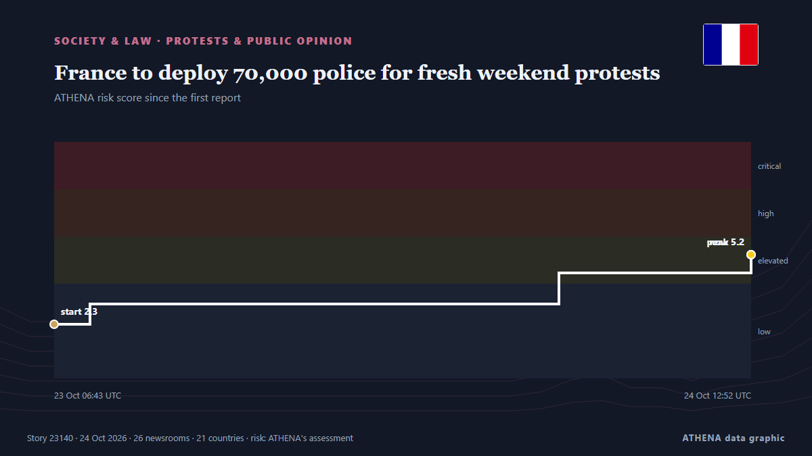

France to deploy 70,000 police for fresh weekend protests

France will deploy about 70,000 police nationwide as it braces for new protests on Saturday after some of the worst urban violence in years erupted on the sidelines of demonstrations a week ago. από Dawn
Αναφέρθηκε ανεξάρτητα από 26 μέσα σε 21 χώρες από τις 21 Οκτ, πρώτο το CGTN (World)· η κάλυψη εξαπλώνεται ακόμη. Το ATHENA εκτιμά τον κίνδυνο αυξημένο (5.6/10), κυρίως λόγω της σοβαρότητάς του και του ρυθμού κάλυψης. Βεβαιότητα 91% (υψηλή): το επιβεβαιώνουν 26 ανεξάρτητα μέσα, μέση αξιοπιστία 75%. Μέσα ανά χώρα: Νιγηρία (4), Τουρκία (3), Ινδία (2). Κάλυψη: 21 Οκτ έως 24 Οκτ, 83 ώρες.
Γιατί έχει σημασία: Οι νομικές αλλαγές και οι αλλαγές πολιτικής μεταβάλλουν δικαιώματα, υποχρεώσεις και δημόσιες υπηρεσίες για όσους αφορούν.
Τι άλλαξε: 27 νέες αναφορές από 24 μέσα στο 24ωρο έως 24 Οκτ.
Πρώτη διατύπωση: France to deploy 70,000 police ahead of weekend protests
Οι τίτλοι των ειδήσεων παρουσιάζονται στα αγγλικά, όπως δημοσιεύτηκαν.
Με μια ματιά
Επιλέγεται, βαθμολογείται και γράφεται από τη δημοσιευμένη μεθοδολογία του ATHENA. Κανένας συντάκτης δεν παρεμβαίνει σε μεμονωμένα γεγονότα. Πώς παράγεται ›
| 21 Oct 01:27 UTC | 1 |
|---|---|
| 21 Oct 04:27 UTC | 0 |
| 21 Oct 07:27 UTC | 0 |
| 21 Oct 10:27 UTC | 0 |
| 21 Oct 13:27 UTC | 0 |
| 21 Oct 16:27 UTC | 0 |
| 21 Oct 19:27 UTC | 0 |
| 21 Oct 22:27 UTC | 0 |
| 22 Oct 01:27 UTC | 0 |
| 22 Oct 04:27 UTC | 0 |
| 22 Oct 07:27 UTC | 0 |
| 22 Oct 10:27 UTC | 0 |
| 22 Oct 13:27 UTC | 0 |
| 22 Oct 16:27 UTC | 0 |
| 22 Oct 19:27 UTC | 0 |
| 22 Oct 22:27 UTC | 0 |
| 23 Oct 01:27 UTC | 0 |
| 23 Oct 04:27 UTC | 0 |
| 23 Oct 07:27 UTC | 1 |
| 23 Oct 10:27 UTC | 4 |
| 23 Oct 13:27 UTC | 5 |
| 23 Oct 16:27 UTC | 2 |
| 23 Oct 19:27 UTC | 2 |
| 23 Oct 22:27 UTC | 0 |
| 24 Oct 01:27 UTC | 2 |
| 24 Oct 04:27 UTC | 3 |
| 24 Oct 07:27 UTC | 4 |
| 24 Oct 10:27 UTC | 7 |
| 23 Oct 06:43 UTC | 2.3 |
|---|---|
| 23 Oct 08:16 UTC | 3.1 |
| 24 Oct 04:34 UTC | 4.5 |
| 24 Oct 12:52 UTC | 5.2 |
| 24 Oct 12:52 UTC | 5.6 |
Γιατί αυτοί οι αριθμοί
Σημασία
Κίνδυνος
Βεβαιότητα
Η κάλυψη — ποιος το ανέφερε και πότε
ο τίτλος όπως δημοσιεύτηκε · ανοίγει το πρωτότυπο- CGTN (World) · ΚίναFrance to deploy military forces for next protests
- Anadolu Agency (English) · ΤουρκίαFrance to deploy police trainees as security measures tighten ahead of Saturday protests
- The Rio Times · ΒραζιλίαFrance Deploys 70,000 Police for Protests
- Anadolu Agency (English) · ΤουρκίαFrance vows ‘extremely firm’ response ahead of Saturday protests, deploys 70,000 security personnel
- RFI English · ΓαλλίαFrance mobilises 70,000 police and gendarmes for Saturday protests
- Vanguard · ΝιγηρίαFrance to deploy 70,000 police ahead of new protests
- NDTV · ΙνδίαFrance To Deploy 70,000 Cops Nationwide Ahead Of Weekend Protests
- Breaking Belize News · ΜπελίζInternational News: France prepares to deploy 70,000 police ahead of new protests
- The Guardian · Ηνωμένο ΒασίλειοFrance to deploy 70,000 police on Saturday to prevent civil unrest
- The New Arab · INTFrance to deploy 70,000 police ahead of new protests
- The Korea Times · Νότια ΚορέαFrance to deploy 70,000 police ahead of new protests
- Punch · ΝιγηρίαFrance to deploy 70,000 police ahead of new protests
- The Daily Star — page reader · ΜπανγκλαντέςFrance to deploy 70,000 police as students urge further protests
- Hespress English · ΜαρόκοFrance to deploy 70,000 police as students urge further protests
- DW English · ΓερμανίαFrance to deploy 70,000 police officers ahead of protests
- The Straits Times · ΣιγκαπούρηFrance to deploy 70,000 police over fresh weekend protests
- BBC News · Ηνωμένο ΒασίλειοFrance prepares for day of protest a week after nationwide riots
- Dawn · ΠακιστάνFrance to deploy 70,000 police for fresh weekend protests
- DW English · ΓερμανίαFrance protests: More violence feared amid renewed demonstrations
- Khaama Press · ΑφγανιστάνFrance to Deploy 70,000 Police Officers Ahead of Protests Amid Unrest Fears
- Anadolu Agency (English) · ΤουρκίαFrance faces new wave of nationwide protests
- to vima · ΕλλάδαParis Braces for Second Day of Nationwide Protests
- RTÉ News · ΙρλανδίαClashes in France as hundreds of thousands protest
- Channels TV · Νιγηρία[UPDATED] France Deploys 70,000 Police For Fresh Weekend Protests
- Politico Europe · ΒέλγιοTensions flare up across France as marches come to an end
- Indian Express · ΙνδίαFrance protests turn violent: 400,000 take to streets in Paris, other cities; clashes erupt
- CBC News · ΚαναδάςTens of thousands march in France as protests continue over schools and living costs
- Channels TV · ΝιγηρίαSeen And Heard At France Protests Today, As Police Arrest 135 People
- The New York Times (World) · Ηνωμένες ΠολιτείεςFrance Protest Updates: Hundreds of Thousands March Amid Heavy Security
- Bangkok Post — page reader · ΤαϊλάνδηSeen and heard at protests in France
- Bangkok Post — page reader · ΤαϊλάνδηSecurity high as France braces for new protests